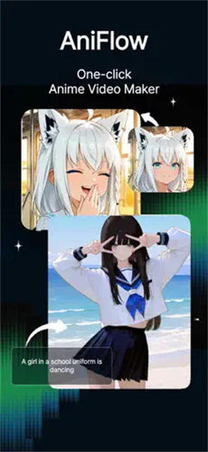

从零跑通 AniFlow 移动端 AI 动漫创作全流程
一篇实操教程带你搞定账户注册、积分管理、风格预设选择、AI 生成与图库管理，把 AniFlow 日常用顺
这篇教程带你从零跑通 AniFlow——注册账户、生成第一张 AI 动漫图、选对风格预设，到把作品存进个人图库管理好，一次性搞定日常使用的完整流程。
准备：你需要知道的三件事
开始之前先确认这几条前置条件，免得中途翻车：
平台。 AniFlow官网 是移动端 App，iOS 和 Android 都能用，两边体验基本一致，只差注册方式（iOS 用 Apple ID 一键登录，Android 用 Google 账号）。
账户必登。 不登录打开 App 只能看界面，生成按钮是灰的——必须有账户才能用 AI 功能。注册本身免费，每日还送 10000 Coin 的免费额度。
积分逻辑。 2025 年 8 月之后 AniFlow 把计费从"按次数"改成了"按 Coin"。每日 0 点重置 10000 Coin，用不完不累积。一次生成静态图像消耗 500 Coin，短视频（6 秒 / 10 秒）消耗 1000 Coin，口型同步额外加 500 Coin。灵活搭配——一天生成 10 张图像加 5 个视频刚好把免费额度花完。
第一步：注册并登录
从官方下载拿到安装包，装完打开 App 先别着急点生成，先把账户这件事搞定。注册有三种方式，别随便选：
一键登录（推荐）。 iOS 用 Apple ID，Android 用 Google 账号。优点是不用记密码，换同平台的新设备也能直接登——AniFlow 会把你的账户和平台身份绑定好。唯一要注意的是如果以后从 iOS 换 Android（或反过来），账户数据需要手动迁移，这一步记得在换设备前先做。
邮箱注册。 填邮箱和密码，收到验证邮件点确认。适合那些想跨平台统一账户的人——邮箱登哪边都一样。
第三方社交登录。 部分版本支持 X（Twitter）和 Discord。操作和一键登录类似，但国内用户基本用不上，选了大概率白折腾。
登出入口在「设置 → 账户」页面。一个容易踩坑的点：切换账户会清空当前会话里还没生成的草稿（prompt 和风格选择），所以一定要先把草稿生成完再切换，别手滑登出。
第二步：跑通你的第一次生成
账户登录好了，下面实际操作一次 AI 动漫生成。
打开 App 首页，找到文本转图像的入口（不同版本可能叫"文字生成"或"AI 创作"）。你会看到风格预设的选择器——先别急着随便点，先看完第三步再决定。prompt 输入框在中间，可以自己写也可以粘一段现成的描述。
写完 prompt、选好风格，点生成按钮。生成时长取决于画面复杂度和当前排队情况——简单的图像通常几十秒，视频要几分钟。进度条在界面顶部，别中途切走，虽然 AniFlow 生成完会自动保存到图库，但切走太多 App 可能被系统杀掉进程中断生成。

生成完成后结果直接显示在屏幕上。满意就点保存（其实自动保存已经帮你存了一份到个人图库），不满意可以改 prompt 或换风格重新生成。
第三步：选对风格预设
AniFlow 内置了几种经典的动漫风格预设，选对了能让 AI 一次出对，选错了改半天 prompt 也出不来想要的感觉。这里挑两种最常用的讲清楚：
Q 版（Chibi）。 头身比极度夸张——头占全身比例一半以上，圆脸大眼，表情丰富，线条粗，色调明亮饱和。处理人物自拍照效果尤其好，自拍照转 Q 版通常能保留发型和脸部特征，同时变得非常可爱。适合做头像、表情包、社交软件头像框，不适合需要表现严肃感或宏大叙事的画面。选 Q 版预设后，prompt 里多描述人物表情和动作效果最好——比如"惊讶表情""比心手势""开心大笑"，Q 版会把这些表情自动放大。
复古 90s 动漫风格。 复刻日本电视动画黄金年代的画风——手绘感明显的粗线条、略饱和但不鲜艳的调色板（粉红、橙黄、深紫、墨绿）、偏写实的角色比例（头身比 1:6 到 1:7）、背景有轻微颗粒感模拟老式胶片质感。适合怀旧主题、校园剧、都市情感剧、老派机器人动画。想强化年代感，在 prompt 里加一些 90s 标志性的视觉元素，比如"霓虹招牌""老式街机厅""公交车站"，AI 识别到这些词会自动往 90s 复古的城市街景靠。

选风格的心态。 预设不是限制，是给 AI 一个起点。同一个 prompt 换不同预设出的图完全不一样——拿你最常用的几个 prompt 分别跑一遍各个预设，看哪个风格和你的创作意图最搭，以后就固定用那几个。想深入调风格参数或看更多预设的适配案例，可以去AniFlow文档翻一下完整说明。
第四步：管理你的个人图库
AniFlow 的自动保存是默认开启且不可关闭的——每次生成成功的图像或视频都会自动存入个人图库，包括原始 prompt、风格选择、生成时长这些参数也一并保存。好处是不会因为切换页面或 App 崩溃丢失成果，坏处是图库会快速膨胀，得定期清理。
底部 Tab 栏的「我的图库」是图屋主界面，按时间倒序排列（最新在最前），支持网格视图和列表视图切换，顶部有筛选器可以只看图像、只看视频、按风格或按时间范围筛选。点击单个作品进入详情页，能放大预览、播放视频、查看原始 prompt 和所有参数。
跨设备同步是自动的——在 iOS 生成的作品，用同一个账户登 Android 就能看到，反之亦然。但同步需要联网，离线时生成的作品得等到联网后才会自动同步到云端。同步完成前别卸载 App 或清理缓存，本地未同步的作品会丢。
定期清理建议：长按图库中的作品进入多选模式，勾选要删的，点垃圾桶图标确认。保持图库在 200 个以内浏览体验最好，多了翻找起来很慢。删除不可逆——云端和本地副本一起删，删之前确认清楚。
三个新手最容易踩的坑
坑一：以为每日 10 次免费生成。 旧版确实是按次数算，但 2025 年 8 月之后改成了 10000 Coin。一天可以生成 20 张图像（20 × 500 = 10000），或者 10 个视频，或者 5 个视频加 10 张图像——灵活搭配，不用纠结"今天到底还有几次"。
坑二：切换账户丢草稿。 登出或切换账户会清空当前会话里还没生成的内容。处理办法很简单：先把草稿点生成，不管结果满不满意，至少存进图库了，换完账户再来调整。
坑三：图库长期不清理。 自动保存的机制太方便了，很多人忘了清。累积到好几百张之后翻找旧作品要等很久，甚至 App 打开图库时会卡顿。每周花 5 分钟清一次，保持在 200 以内，体验差很多。
进阶一句话
跑通以上流程之后，还能试试口型同步（让静态图里的人物张嘴说话）和视频生成，把一张图变成会动的短片段——这些功能消耗的 Coin 多一些，但每日 10000 Coin 的免费额度也够你每天试几次。如果免费额度不够用，可以在积分商店内购充值，或者订一个每月 Coin 池更大的会员；也可以盯着新用户注册奖励、节假日活动偶尔薅一波免费 Coin。
AniFlow 的资料在三个仓库都能拿到：GitHub 上是主仓库，Gitee 适合国内网络环境访问，GitCode 作为备份镜像同步更新。三个仓库里都有完整的软件安装包和本文档所依赖的参考资料。